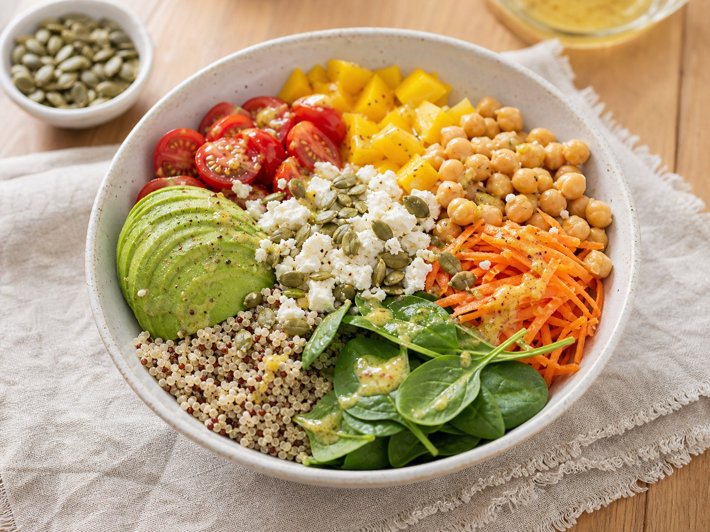

Quinoa avocado bowl
A colourful mix of whole-grain quinoa, chickpeas, crisp vegetables and creamy avocado. Ready in 20 minutes and ideal for a packed lunch.

Method
- Cook the quinoa. Rinse it in a fine sieve until the water runs clear. Add to a pan with 200 ml water and a pinch of salt, bring to the boil and simmer, covered, for 13–15 minutes. Remove from the heat and rest for 3 minutes.
- Crisp the chickpeas. Pat the drained chickpeas dry. Heat one teaspoon of oil in a pan and fry for 4–5 minutes until lightly crisp. Season with salt and pepper.
- Prep the vegetables. Halve the tomatoes, slice the pepper, grate the carrot and cut the avocado just before serving.
- Whisk the dressing. Mix the remaining oil with the lemon juice, mustard, two teaspoons of water and a pinch of salt and pepper.
- Build the bowls. Divide the spinach, warm quinoa, chickpeas and vegetables between two bowls. Crumble over the feta, add the seeds and drizzle with dressing.
Hana's tip
Cook the quinoa the night before. It keeps for up to three days in the fridge, so lunch then takes less than ten minutes to assemble. Add the avocado and dressing just before eating.
Easy swaps
- For a vegan bowl, leave out the feta or add marinated tofu.
- Swap quinoa for buckwheat or brown rice.
- For more protein, add one egg per serving.
Storage
Without the avocado and dressing, the bowl keeps in a sealed container in the fridge for 2–3 days. Store the dressing separately and shake before serving.
Approx. per serving
Recipe makes 2 servings
Nutrition values are estimates and may vary depending on the specific ingredients and serving size.
This bowl combines vegetables, a whole grain and protein in proportions close to the Healthy Eating Plate. No single meal treats stress or a hormone condition.